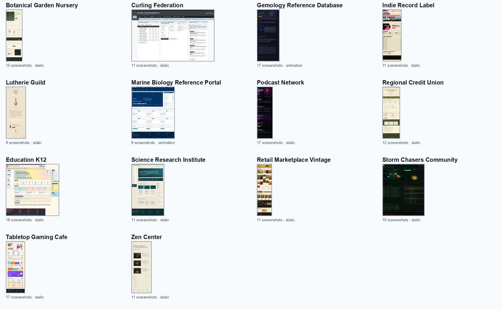
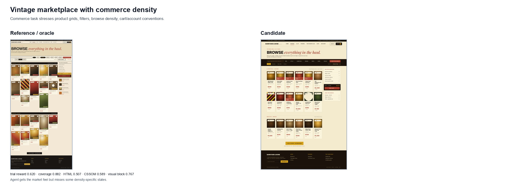

4. Strong reproduction: institutional dashboard

The K-12 task is a good high-end example: the agent keeps the dashboard grammar, side navigation, cards, footer, and school-specific density.
reward 0.678coverage 0.957HTML 0.634CSSOM 0.646
This document shows the task set as an environment design artifact: generated multi-page websites, screenshot-only agent inputs, hidden oracle manifests, and browser-state grading. The focus here is not the reward internals; it is whether the generated tasks are varied, realistic, and useful for observing how coding agents reproduce website designs.
All with hidden oracle sites and screenshot manifests.
Full pages plus meaningful states, exposed to the agent as numbered images.
Marine biology and gemology include V1 animation captures.
Each task is a synthetic oracle website generated from scratch, then frozen into screenshots and hidden replay metadata. This avoids crawling existing websites while still creating realistic browsing surfaces.

| Task | Domain | Screenshots | Animation | Why it adds useful variety |
|---|---|---|---|---|
| botanical-garden-nursery | garden / nursery | 15 | No | Plant retail, visiting, membership, garden map, workshops, seasonal content. |
| curling-federation | sports federation | 11 | No | Standings, results, brackets, athlete directory, rules, clubs. |
| gemology-reference-database | reference database | 17 | Yes | Dense educational/reference pages: minerals, cuts, glossary, grading, provenance. |
| indie-record-label | music / label | 11 | No | Editorial/zine branding, releases, artists, catalog, tour, shop. |
| lutherie-guild | craft / guild | 9 | No | Artisanal workshop, materials, apprenticeship, exhibitions, journal pages. |
| marine-biology-reference-portal | science reference | 8 | Yes | Taxonomy, habitat, conservation, field guide, publication-heavy pages. |
| podcast-network | media network | 17 | No | Episode archive, channel filters, audio/player surfaces, live events. |
| regional-credit-union | financial services | 12 | No | Calculators, sign-in flows, governance, branch finder, reading room. |
| site-01-education-k12 | K-12 education | 18 | No | Institutional dashboard, lunch/calendar/board/academics/portal states. |
| site-04-science-research-institute | research institute | 11 | No | People, publications, data, expeditions, careers, newsroom. |
| site-05-retail-marketplace-vintage | vintage marketplace | 11 | No | Browse, lot detail, cart, account, picker, activity log. |
| storm-chasers-community | weather community | 10 | No | Ops dashboards, logs, spotters, gear, gallery, roster, events. |
| tabletop-gaming-cafe | hospitality / gaming | 17 | No | Menu, booking steps, events, game library, reviews, membership. |
| zen-center | nonprofit / community | 11 | No | Schedule, teachers, visits, audio, donations, application flows. |
The K-12 task is a good high-end example: the agent keeps the dashboard grammar, side navigation, cards, footer, and school-specific density.

This task demonstrates that the dataset is not just homepage screenshots. The highlighted garden-map state requires preserving a specific browser-visible state.

The marketplace task stresses browse grids, filter/control density, product cards, account/cart conventions, and state-specific density variants.

The tabletop task shows why multi-state tasks matter. The candidate includes the contact form, but keeps previous-step content and changes the page geometry.

The agent recognizes the federation/roster domain, but redesigns card density, header geometry, footer/page proportions, and information hierarchy.

The lutherie task is useful because broad mood is preserved while exact typography, copy structure, and geometry are not. It shows why a task set needs stricter local metrics.

The indie-label task shows a common model behavior: produce a compelling genre page, but miss rendered content structure and local page-specific details.